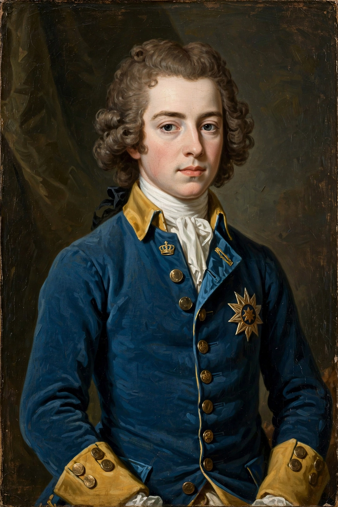

| Born | 17 June 1682, Stockholm |
|---|---|
| Died | 30 November 1718, Fredriksten, Norway |
| Reign | 1697-1718 |
| House | Palatinate-Zweibrucken (Wittelsbach) |
Charles XII (1682-1718) was King of Sweden who led his country through most of the Great Northern War (1700-1721).
Early victories
Crowned at fifteen, he defeated Denmark, Russia at Narva (1700), and Poland-Saxony, deposing Augustus II and installing Stanislaw Leszczynski.
Russian campaign and exile
His 1708 invasion of Russia ended in catastrophic defeat at Poltava (1709). He spent five years in Ottoman exile at Bender, urging war on Russia, before riding across Europe back to Sweden in 1714.
Death and legacy
Charles was killed by a projectile while besieging Fredriksten in Norway in 1718; whether the shot was enemy or Swedish remains debated. Sweden's age as a great power ended with him, though his tactical brilliance and austere soldier-king image endure, celebrated and criticised by figures from Voltaire onward.